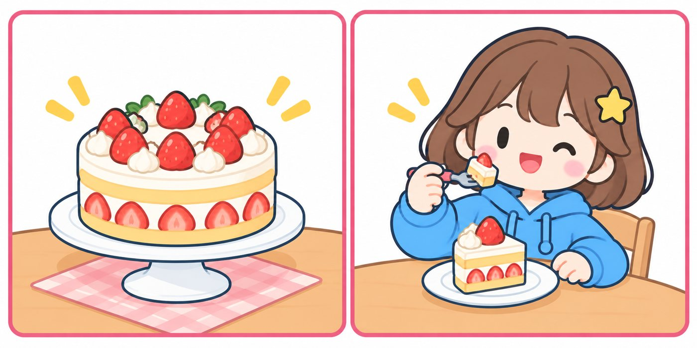
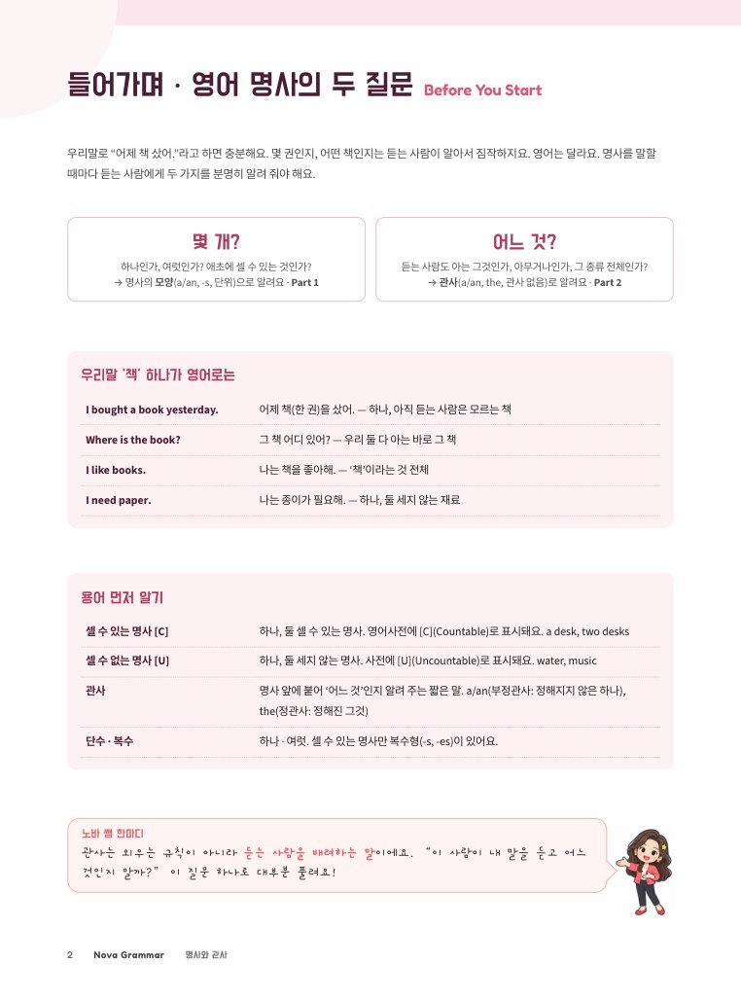
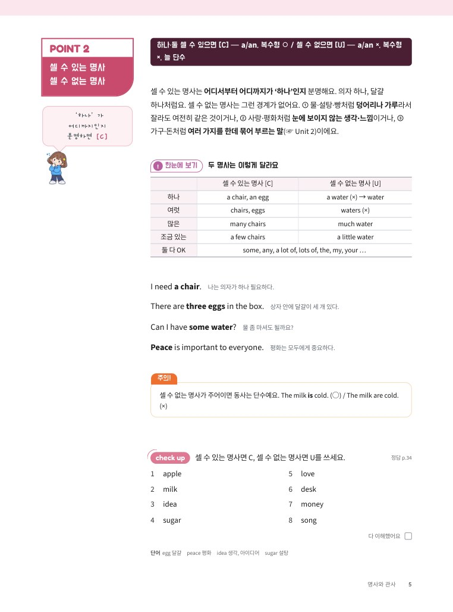
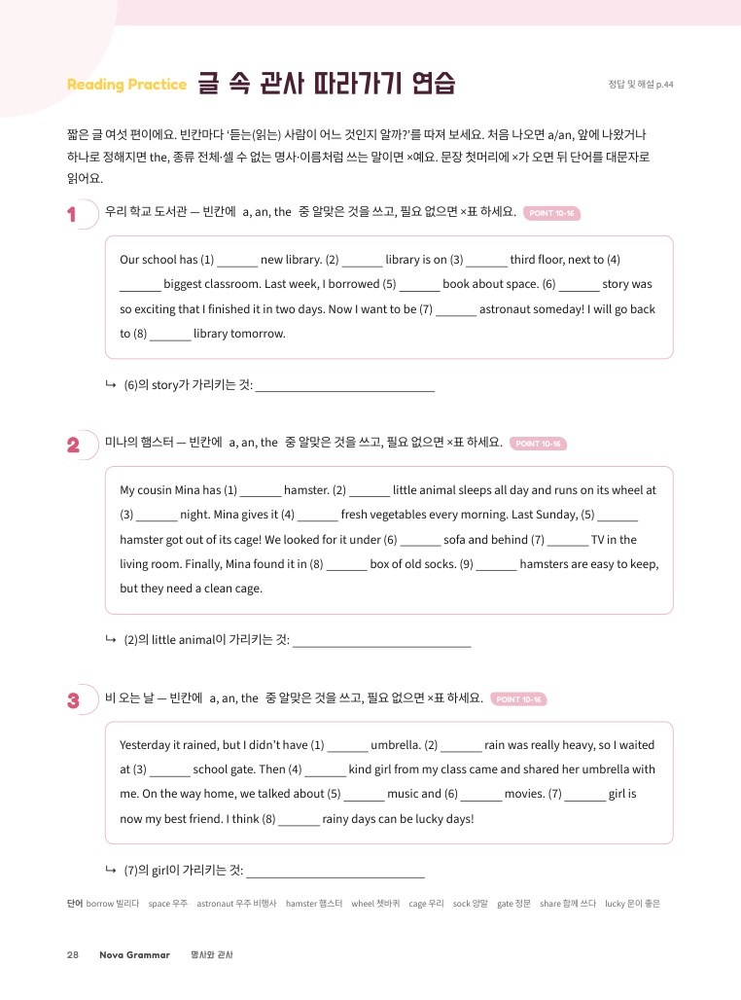
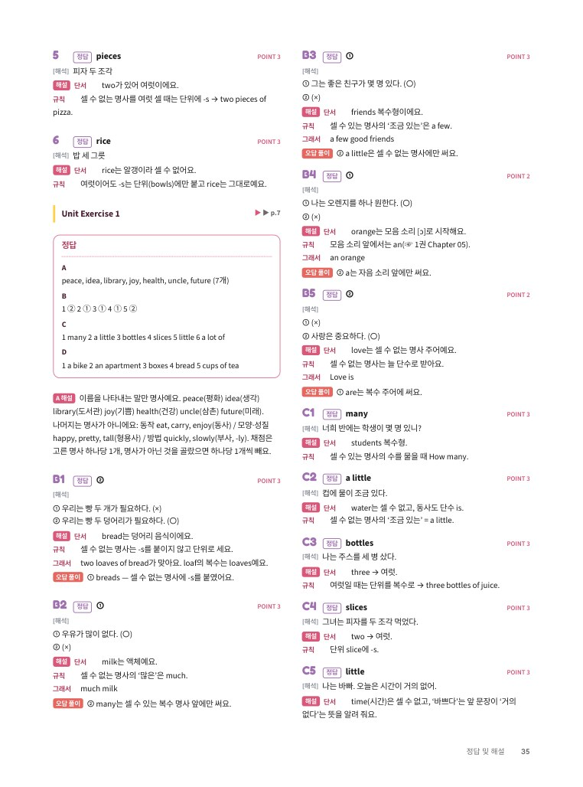

NovaGrammar
명사와 관사 몇 개? 어느 것? 명사의 두 질문으로 끝내는 a · the
차례
Contents이 책 사용법
① 미리 풀어 보기(p.3)로 지금 실력을 확인하고, 틀린 문항의 Unit부터 읽어도 좋아요.② POINT마다 규칙 한 줄 → 설명 → 예문 → check up 순서로 공부해요. 예문은 소리 내어 읽어요.
③ Unit이 끝나면 Unit Exercise를 풀고 정답 및 해설(p.34~)로 채점해요. 80% 이상이면 다음 Unit으로!
④ ‘맛보기’는 중학교 범위를 조금 넘는 내용이에요. 읽어만 두면 돼요.
⑤ 1권을 다 마친 뒤 공부하는 책이에요(1권 → 「명사와 관사」 → 「전치사」 → 2권). 1권 Chapter 05에서 배운 복수형·a/an 규칙은 다시 길게 설명하지 않으니, 기억이 안 나면 1권을 먼저 펴 봐요.
들어가며 · 영어 명사의 두 질문
Before You Start우리말로 “어제 책 샀어.”라고 하면 충분해요. 몇 권인지, 어떤 책인지는 듣는 사람이 알아서 짐작하지요. 영어는 달라요. 명사를 말할 때마다 듣는 사람에게 두 가지를 분명히 알려 줘야 해요.
→ 명사의 모양(a/an, -s, 단위)으로 알려요 · Part 1
→ 관사(a/an, the, 관사 없음)로 알려요 · Part 2
우리말 ‘책’ 하나가 영어로는
| I bought a book yesterday. | 어제 책(한 권)을 샀어. — 하나, 아직 듣는 사람은 모르는 책 |
|---|---|
| Where is the book? | 그 책 어디 있어? — 우리 둘 다 아는 바로 그 책 |
| I like books. | 나는 책을 좋아해. — ‘책’이라는 것 전체 |
| I need paper. | 나는 종이가 필요해. — 하나, 둘 세지 않는 재료 |
용어 먼저 알기
| 셀 수 있는 명사 [C] | 하나, 둘 셀 수 있는 명사. 영어사전에 [C](Countable)로 표시돼요. a desk, two desks |
|---|---|
| 셀 수 없는 명사 [U] | 하나, 둘 세지 않는 명사. 사전에 [U](Uncountable)로 표시돼요. water, music |
| 관사 | 명사 앞에 붙어 ‘어느 것’인지 알려 주는 짧은 말. a/an(부정관사: 정해지지 않은 하나), the(정관사: 정해진 그것) |
| 단수 · 복수 | 하나 · 여럿. 셀 수 있는 명사만 복수형(-s, -es)이 있어요. |

미리 풀어 보기
Check Yourself바른 문장이면 O, 틀린 문장이면 X에 표시해요. 지금 아는 만큼만 풀면 돼요. 틀린 문항은 거꾸로 적힌 정답 옆의 Unit에서 다시 만나요.
몇 개 맞았나요?
| 9~10개 | 규칙은 잘 알고 있어요. 각 Unit의 check up과 Unit Exercise 위주로 빠르게 확인해요. |
|---|---|
| 6~8개 | 틀린 문항의 Unit을 먼저 읽고, 나머지는 차례로 공부해요. |
| 5개 이하 | Unit 1부터 차례로 공부해요. 한 Unit을 끝낼 때마다 Unit Exercise로 확인해요. |
이 책의 길
| Part 1 몇 개? | Unit 1 셀 수 있는/없는 명사 → Unit 2 늘 셀 수 없는 명사 → Unit 3 뜻에 따라 바뀌는 셈 |
|---|---|
| Part 2 어느 것? | Unit 4 세 가지 정체 → Unit 5 the → Unit 6 관사 없이 → Unit 7 하나와 다른 하나 → Unit 8 대화·글 속 관사 |
명사, 셀까 말까
명사가 문장에서 하는 일을 확인하고, 영어 명사를 ‘셀 수 있는 명사’와 ‘셀 수 없는 명사’로 나누는 법, 그리고 양을 나타내는 말을 배워요.
명사의 자리
생각·느낌도
명사

명사는 눈에 보이는 것(friend, desk, Busan)뿐 아니라 눈에 보이지 않는 생각이나 느낌(peace, friendship, happiness)의 이름도 돼요. 문장에서는 주어(~은/는, ~이/가), 목적어(~을/를), 보어(주어가 누구·무엇인지 설명하는 말) 자리에 와요.
My cat sleeps all day.주어우리 고양이는 하루 종일 잔다.
Honesty is important.주어정직은 중요하다.
I like mangoes.목적어나는 망고를 좋아한다.
We lost the game yesterday.목적어우리는 어제 경기에서 졌다.
My sister is a nurse.보어우리 언니는 간호사이다.
학교 문법책은 명사를 보통·고유·물질·추상·집합명사 다섯 가지로 나눠요. 그런데 이 이름표를 외우는 것보다 중요한 것은 그 명사를 셀 수 있느냐예요. 셀 수 있느냐에 따라 a를 붙일지, 복수형을 쓸지, many와 much 중 무엇을 쓸지가 정해지거든요. 그래서 이 책은 명사를 셀 수 있는 명사 [C]와 셀 수 없는 명사 [U] 두 가지로 나눠 봐요.
단어honesty 정직mango 망고kindness 친절cook 요리사library 도서관parrot 앵무새
셀 수 없는 명사
어디까지인지
분명하면 [C]

셀 수 있는 명사는 어디서부터 어디까지가 ‘하나’인지 분명해요. 의자 하나, 달걀 하나처럼요. 셀 수 없는 명사는 그런 경계가 없어요. ① 물·설탕·빵처럼 덩어리나 가루라서 잘라도 여전히 같은 것이거나, ② 사랑·평화처럼 눈에 보이지 않는 생각·느낌이거나, ③ 가구·돈처럼 여러 가지를 한데 묶어 부르는 말(☞ Unit 2)이에요.
| 셀 수 있는 명사 [C] | 셀 수 없는 명사 [U] | |
|---|---|---|
| 하나 | a chair, an egg | a water (×) → water |
| 여럿 | chairs, eggs | waters (×) |
| 많은 | many chairs | much water |
| 조금 있는 | a few chairs | a little water |
| 둘 다 OK | some, any, a lot of, lots of, the, my, your … | |
I need a chair.나는 의자가 하나 필요하다.
There are three eggs in the box.상자 안에 달걀이 세 개 있다.
Can I have some water?물 좀 마셔도 될까요?
Peace is important to everyone.평화는 모두에게 중요하다.
단어egg 달걀peace 평화idea 생각, 아이디어sugar 설탕
단위
단위를
앞에!

‘많은’은 셀 수 있으면 many, 셀 수 없으면 much예요. a few·a little은 ‘조금 있는’, few·little은 ‘거의 없는’이에요(☞ 2권 Chapter 09 POINT 3). 셀 수 없는 명사를 세고 싶으면 담는 그릇이나 모양을 나타내는 단위를 앞에 써요. 여럿일 때는 명사가 아니라 단위를 복수로 만들어요.

| 단위 | 예 | 단위 | 예 |
|---|---|---|---|
| a piece of | paper, cake, advice | a slice of | bread, pizza, cheese |
| a glass of | milk, water, juice | a bowl of | rice, soup |
| a cup of | tea, coffee | a bottle of | water, juice |
I drink two glasses of milk every day.나는 매일 우유를 두 잔 마신다.
There is a little juice in the bottle.병에 주스가 조금 있다.
단어slice 조각bowl 그릇bottle 병juice 주스
Unit Exercise
정답 및 해설 p.35다음 중 명사를 모두 찾아 ○표 하세요. (명사는 7개예요) POINT 1
두 문장 중 바른 것을 고르세요. POINT 2-3
괄호 안에서 알맞은 것을 고르세요. POINT 2-3
밑줄 친 부분은 모두 틀렸어요. 바르게 고쳐 쓰세요. POINT 2-3
18개 이하 틀린 문제의 POINT를 다시 읽고, 1권 Chapter 05 POINT 1~3을 함께 봐요.
단어loaf (빵) 한 덩어리 (복수 loaves)apartment 아파트health 건강future 미래joy 기쁨
늘 셀 수 없는 명사
‘가구’, ‘정보’처럼 우리말로는 하나, 둘 셀 수 있을 것 같은데 영어에서는 늘 셀 수 없는 명사를 배워요. 이 명사들에는 a/an도, -s도 붙지 않아요.
명사
가구 하나 ×
묶음은 [U]

의자·책상·침대는 하나하나 셀 수 있어요. 그런데 이것들을 모두 묶어 ‘가구’라고 부르면, 가구는 눈앞의 물건 하나가 아니라 여러 종류를 한데 모은 말이 돼요. 그래서 furniture는 셀 수 없어요. 이런 묶음 명사는 a/an을 붙이지 않고, 복수형도 없고, 늘 단수로 받아요. 하나를 세고 싶으면 a piece of를 쓰거나 그 안의 셀 수 있는 명사로 바꿔 말해요.
| 묶음 (셀 수 없음) | 그 안의 것 (셀 수 있음) |
|---|---|
| furniture 가구 | a chair, a desk, a bed, a sofa |
| baggage (= luggage) 짐 | a bag, a suitcase |
| clothing 옷, 의류 | a shirt, a skirt, a jacket |
| equipment 장비 | a ball, a bat, a racket, a helmet |
| money 돈 | a coin, a bill(지폐), a dollar |
| mail 우편물 | a letter, a postcard |
| traffic 교통(량) | a car, a bus, a truck |
| music 음악 | a song |
We bought some new furniture.우리는 새 가구를 좀 샀다.
How much money do you have?너는 돈을 얼마나 가지고 있니?
There was a lot of traffic this morning.오늘 아침에는 차가 많이 막혔다.
This sofa is a nice piece of furniture.이 소파는 멋진 가구 한 점이다.
돈의 양은 much money, 동전·지폐의 개수는 many coins예요.
단어suitcase 여행 가방helmet 헬멧coin 동전bill 지폐postcard 엽서loud 시끄러운
개념 명사
영어는
a를 못 붙여요

사전의 [C]와 [U]
영어사전은 명사 옆에 [C](셀 수 있음), [U](셀 수 없음)를 적어 둬요. 새 명사를 찾을 때 이 표시까지 함께 봐요.advice [U] 충고
idea [C] 생각, 아이디어
paper [U] 종이 / [C] 신문
우리말로는 ‘충고 하나’, ‘좋은 소식 하나’라고 자연스럽게 말해요. 그래서 a를 붙이기 쉬운데, 이 명사들은 영어에서 늘 셀 수 없어요. 모양이 없는 생각이나 내용을 가리키기 때문이에요. a/an 대신 some, any, a lot of를 쓰고, 꼭 하나를 세려면 a piece of를 붙여요. news는 -s로 끝나지만 복수가 아니라서 단수 동사를 써요.
| 명사 | 이렇게 써요 (○) | 이렇게 쓰지 않아요 (×) |
|---|---|---|
| advice 충고 | some advice, a piece of advice | an advice, advices |
| information 정보 | a lot of information | informations |
| news 소식 | good news, The news is … | a news, The news are |
| homework 숙제 | much homework | homeworks |
| weather 날씨 | nice weather | a nice weather |
| fun 재미 | have fun, a lot of fun | a fun |
My teacher gave me some good advice.선생님께서 내게 좋은 충고를 해 주셨다.
There is good news about our trip.우리 여행에 관한 좋은 소식이 있다.
The news was surprising.그 소식은 놀라웠다.
We had a lot of fun at the festival.우리는 축제에서 정말 재미있게 놀았다.
단어advice 충고information 정보surprising 놀라운festival 축제
Unit Exercise
정답 및 해설 p.37괄호 안에서 알맞은 것을 고르세요. POINT 4-5
밑줄 친 부분은 모두 틀렸어요. 바르게 고쳐 쓰세요. POINT 4-5
우리말과 같은 뜻이 되도록 괄호 안의 말을 이용하여 문장을 쓰세요. POINT 4-5
12개 이하 틀린 문제의 POINT를 다시 읽고, 묶음 명사와 개념 명사 표를 소리 내어 읽어요.
단어museum 박물관luggage 짐wise 지혜로운hall 강당interesting 흥미로운terrible 끔찍한true 사실인
몇 개? 어느 것?
명사의 두 질문
영어 명사는 늘 두 가지를 밝혀요. 셀 수 있는지, 듣는 사람도 아는 것인지.
이 두 질문 하나로 a, the, -s, 관사 없이까지
헷갈리던 관사를 한 번에 정리해요.
1셀까 말까부터
셀 수 있는·없는 명사, 묶어 부르는 명사, 재료와 만든 것까지 이름표 외우기 대신 ‘쪼개 보기’로 판단해요.
2a · the · 관사 없이
the를 쓰는 기준, 관사 없이 쓰는 말, one·another·the other를 POINT 16개로 차근차근 정리해요.
3글 속 관사 따라가기
짧은 글 6편에서 처음 나온 a가 the로 바뀌는 흐름을 직접 따라가며 읽는 눈을 길러요.
4혼자 읽는 자세한 해설
모든 문항에 단서 → 규칙 → 그래서 풀이와 다시 볼 POINT를 붙여 혼자서도 채점하고 복습해요.

들어가며
개념 정리
글 속 관사
정답 및 해설